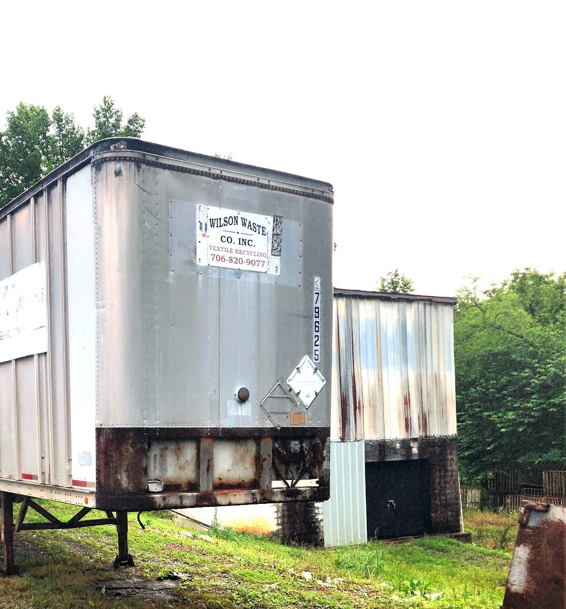
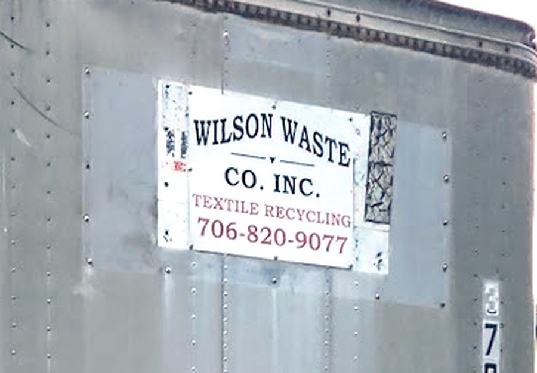

Unsolicited design sample. Built from public information. Not an official Wilson Waste Co. website — not affiliated, not endorsed, not live.
Rossville, Georgia · Walker County
A working yard on Dry Valley Road. Drivers welcome Monday through Friday, 7:00 am to 5:00 pm.
Office hours are 7:00 am – 5:00 pm, Monday to Friday.

Before you set off
Drivers keep reporting that satnav routes them down the wrong roads into the valley. Use the route below instead.
The approach is narrow with tight turns. Drivers advise bringing your tandems forward for maximum manoeuvrability before you make the turn in.
Every step on this page is taken from drivers' own public Google reviews of this yard, 2016–2025. Read the reviews.
What we do
Wilson Waste Co., Inc. is a textile recycler — the trade term is textile waste reclamation. That is the business named on our own equipment and the category we're listed under in the industrial directories.
It says so on the side of our trailers:

This is a commercial yard with loading docks, set up for trailers. If you're hauling in a load, use the route and the check-in steps above.
Not sure whether we handle what you've got? Call the yard and ask.
Opening hours
| Monday | 7:00 am – 5:00 pm |
|---|---|
| Tuesday | 7:00 am – 5:00 pm |
| Wednesday | 7:00 am – 5:00 pm |
| Thursday | 7:00 am – 5:00 pm |
| Friday | 7:00 am – 5:00 pm |
| Saturday | Closed |
| Sunday | Closed |
What drivers say
“Staff was professional and decently quick enough.”
— p turtle, Google review, 2024
“The owner is a great guy and helps to make sure his drivers drive safe for our community.”
— Sab B, Google review, 2019
“Park out of the way and go up the stairs next to the first dock then keep left and you will see offices. That's where you check in, they will bring paperwork to you once finished.”
— p turtle, Google review, 2024
Quoted verbatim from public Google reviews, attributed to the reviewer's own display name. Rating and count verified 27 October 2026.
Contact